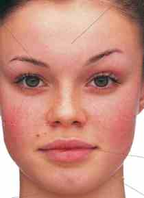

Interactive English · People & Appearance
Explore the face.
Master every detail.
Rotate a lifelike 3D woman with long dark hair and open eyes, explore facial features, drag English vocabulary labels and practice with live skin controls.
0 / 20Words discovered
Explore the face
Click a colored pin to discover a word.

2D ready · Loading female 3D portrait...
Drag to rotate · Scroll or pinch to zoom · Click the pins to explore.
New female portrait: A licensed Microsoft Rocketbox female avatar with long dark hair and eyes that can open is used as an approximation of the shared Tripo portrait description. This is not the original Tripo model and not an identical reconstruction: the Tripo link does not expose reusable model geometry here. The 3D avatar streams from an external GitHub Pages host; Internet is required. The original photograph is used only in 2D. Use Import GLB to load your own realistic face directly from your computer without uploading it to a server. Skin controls are simplified educational visuals. Model credits and MIT license.
Vocabulary atlas
20 English words · 16 face parts + 4 skin features · Click to inspect any word.